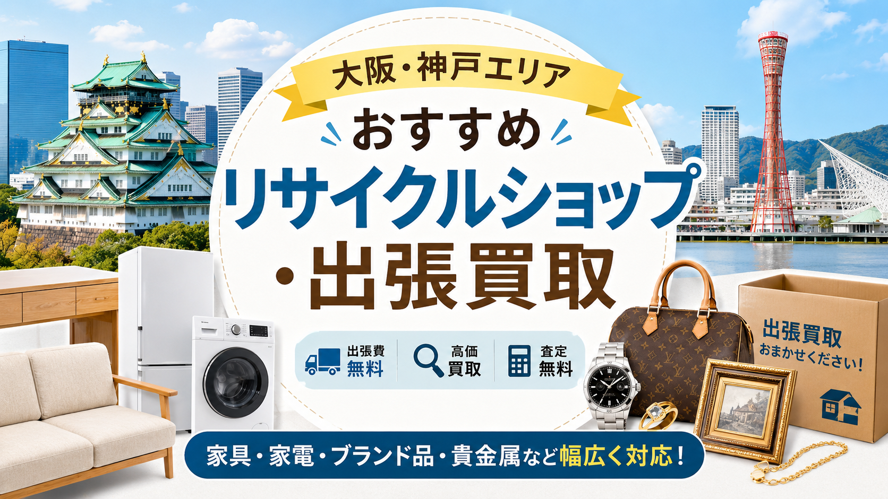

関西お問合せ 10:00-20:00 年中無休
LINE・WEB受付
LINE査定
RECYCLE SHOP / OSAKA & KOBE
大阪市・神戸市・関西エリアで利用しやすい大手＋関西密着型のリサイクルショップ・買取専門店7つを目的別に比較。家具・家電・ブランド品・貴金属まで、売りたい品目別の選び方と、出張買取の活用ポイントも解説します。

大阪・神戸で家具・家電、ブランド品、貴金属、生活雑貨、不用品などを売りたいときは、リサイクルショップの店頭買取だけでなく、出張買取サービスも上手に活用するのがおすすめです。
大阪市、堺市、吹田市、豊中市、東大阪市、尼崎市、西宮市、神戸市、芦屋市、明石市などの都市部では、リサイクルショップや買取専門店の選択肢が多くあります。
ただし、すべてのリサイクルショップが同じ品目に強いわけではありません。家具・家電に強い店舗、ブランド品や貴金属に強い店舗、衣類やホビー用品に強い店舗、引越しや実家整理に向いている出張買取業者など、それぞれ特徴があります。
この記事では、大阪・神戸で利用しやすいリサイクルショップ・出張買取サービスの選び方と、おすすめの大手リサイクルショップ・買取店を紹介します。
出張買取は、自宅まで査定スタッフが来てくれる買取方法です。大型家具や大型家電など、自分で店舗まで運ぶのが難しい品物を売りたいときに便利です。大阪・神戸で出張買取が向いているのは、次のようなケースです。
大阪市内や神戸市内のマンションでは、エレベーターの有無、搬出経路、駐車スペースなどによって対応可否が変わることもあります。出張買取を依頼する前に、品物のサイズ、年式、メーカー、設置場所、搬出経路を伝えておくとスムーズです。
リサイクルショップを利用する場合、主な買取方法は「店頭買取」「出張買取」「宅配買取」の3つです。
店頭買取は、品物を店舗に持ち込んでその場で査定してもらう方法です。衣類、ブランド品、貴金属、ゲーム、ホビー用品、小型家電、雑貨など、持ち運びしやすい品物に向いています。
出張買取は、査定スタッフが自宅に来て査定・買取・搬出まで行う方法です。冷蔵庫、洗濯機、ソファ、食器棚、ダイニングセットなど、運び出しが大変な品物に向いています。
宅配買取は、品物を箱に詰めて送る方法です。ブランド品、時計、貴金属、衣類、小型家電、ホビー用品などに向いていますが、大型家具・大型家電には不向きです。
大阪・神戸で大型品を売るなら、まず出張買取に対応しているかを確認しましょう。小物が多い場合は、店頭買取や宅配買取と組み合わせるのもおすすめです。
大阪・神戸エリアで利用しやすい大手リサイクルショップ・買取店を紹介します。店舗やサービスによって対応エリア、買取品目、出張条件、査定基準は異なります。実際に依頼する際は、公式サイトで最新情報を確認してください。
トレジャーファクトリーは、家具・家電・衣類・ブランド品・雑貨・スポーツ用品・楽器など、幅広いジャンルを扱う総合リユースショップです。
大阪府内にも店舗があり、家具・家電の出張買取にも対応しています。大型家具や大型家電をまとめて売りたい場合に検討しやすいサービスです。
特に、冷蔵庫、洗濯機、テレビ、電子レンジ、ソファ、ダイニングセット、食器棚、チェストなど、引越し時に不要になりやすい品物との相性が良いです。
セカンドストリートは、全国展開している大手リユースショップです。衣類やブランド品のイメージが強いですが、家具・家電の買取にも対応している店舗があります。
大阪・神戸エリアにも店舗が多く、店頭買取を利用しやすい点が魅力です。ファッションアイテム、バッグ、靴、時計、生活雑貨、小型家電などを売りたい場合にも便利です。
出張買取は主に大型家具・大型家電が対象となるため、衣類や小物だけを出張で依頼したい場合は、事前に対応可否を確認しましょう。
良品買館は、大阪・兵庫・奈良など関西エリアを中心に展開している総合リサイクルショップです。家具、家電、ブランド品、貴金属、衣類、生活雑貨、楽器、ホビー用品、ベビー用品など、幅広いジャンルを扱っています。
大阪・神戸周辺で、地域密着型のリサイクルショップを探している人に向いています。引越し時の不用品整理や、家の中のものをまとめて査定したい場合にも相談しやすいサービスです。
ハードオフグループは、オーディオ、楽器、パソコン、ゲーム、カメラ、工具、ホビー用品、家電、家具、生活用品など、ジャンルごとに専門性のあるリユースショップを展開しています。
ハードオフはオーディオ・楽器・パソコン・ゲームなどに強く、オフハウスは家具・家電・生活用品・衣類などを扱う店舗が多いです。
大阪・神戸周辺で、家電や趣味用品、オーディオ機器、楽器、工具、ホビー用品などを売りたい場合に検討しやすいショップです。
エコリングは、ブランド品、貴金属、時計、ジュエリー、バッグ、衣類、家電、雑貨など、幅広い品物の買取を行う買取専門店です。
大阪府・兵庫県にも店舗があり、出張買取にも対応しています。大型家具・家電というよりは、ブランド品、貴金属、時計、バッグ、ジュエリー、日用品、贈答品などをまとめて査定したい場合に向いています。
キングラムは、ブランド品、時計、貴金属、宝石、金券、切手などの買取に強い買取専門店です。大阪・兵庫エリアにも店舗があり、ブランド品や貴金属を売りたい人に向いています。
家具・家電のリサイクルショップというよりは、価値の高い小物や資産性のある品物を査定してもらうための買取専門店として利用するとよいでしょう。
買取大吉は、全国に多数の店舗を展開する買取専門店です。ブランド品、時計、貴金属、宝石、切手、古銭、カメラ、金券など、幅広い品目を扱っています。
大阪・神戸エリアにも店舗が多く、駅近や商業施設周辺で利用しやすい店舗を探しやすいのが特徴です。大型家具・大型家電の買取というよりは、ブランド品や貴金属などの高額品を売りたいときに向いています。
※ 各社の取り扱い品目・出張買取対応の有無・対応エリアは店舗ごとに異なる場合があります。最新情報は各公式サイトをご確認ください。
大阪・神戸でリサイクルショップや出張買取を選ぶときは、「どの会社が有名か」だけでなく、「何を売りたいか」で選ぶことが大切です。
冷蔵庫、洗濯機、テレビ、電子レンジ、エアコン、ソファ、食器棚、ダイニングセットなどを売る場合は、家具・家電の出張買取に対応しているリサイクルショップを選びましょう。候補としては、トレジャーファクトリー、セカンドストリート、良品買館、オフハウスなどが検討しやすいです。
ただし、家具・家電は年式や状態が重視されます。家電は製造年式、家具は購入時期やブランド、傷や汚れ、搬出のしやすさによって査定額や買取可否が変わります。
ブランドバッグ、時計、ジュエリー、金、プラチナ、宝石などを売る場合は、買取専門店も比較しましょう。エコリング、キングラム、買取大吉などは、ブランド品や貴金属の査定に向いています。高額品は相場が変動しやすいため、複数社で査定を取ると安心です。
衣類、靴、バッグ、生活雑貨、ホビー用品、小型家電などを売る場合は、セカンドストリート、トレジャーファクトリー、良品買館、オフハウスなどが候補になります。衣類は季節やブランド、状態によって査定額が変わります。売る前に洗濯やクリーニングをして、できるだけきれいな状態にしておくと印象がよくなります。
実家整理や遺品整理では、家具・家電、衣類、食器、雑貨、貴金属、骨董品、趣味用品など、さまざまな品物が混在します。
この場合は、幅広いジャンルを見られるリサイクルショップや出張買取サービスを選ぶのがおすすめです。価値がありそうなブランド品や貴金属は、専門店で別査定に出すのもよい方法です。
出張買取をスムーズに進めるには、事前準備が重要です。特に大阪・神戸のマンションや住宅街では、搬出条件によって当日の作業時間や対応可否が変わることがあります。
まずは、売りたい品物をリスト化しましょう。家具・家電の場合は、メーカー名、型番、購入時期、サイズ、状態をメモしておくと便利です。
家電は本体に貼られているラベルで製造年式を確認できます。冷蔵庫や洗濯機、テレビなどは、製造年式が査定に大きく影響します。
出張買取の申し込み時に、品物の写真を求められることがあります。全体写真、型番ラベル、傷や汚れのある部分を撮影しておくと、事前査定がスムーズになります。大型家具の場合は、設置場所や搬出経路の写真もあるとよいでしょう。
リモコン、説明書、保証書、電源コード、棚板、ネジ、箱などの付属品がある場合は、できるだけそろえておきましょう。ブランド品の場合は、箱、保存袋、ギャランティカード、購入証明書などがあると査定にプラスになる場合があります。
大型家具・大型家電の場合は、玄関、廊下、階段、エレベーター、駐車スペースなどを確認しておきましょう。
大阪市内や神戸市内のマンションでは、管理規約によって搬出可能な時間帯が決まっている場合もあります。事前に管理会社や管理人へ確認しておくと安心です。
大阪・神戸でリサイクルショップや出張買取を利用するなら、少しの工夫で査定額が変わることがあります。
家具や家電は、見た目の印象が大切です。ほこり、汚れ、シール跡、食べこぼし、カビなどがあると、査定額が下がる原因になります。
冷蔵庫や洗濯機は、内部の汚れやにおいも確認されやすいポイントです。無理のない範囲で掃除してから査定に出しましょう。
冷蔵庫、洗濯機、電子レンジ、ベッド、デスクなどは、引越しシーズン前後に需要が高まりやすい品目です。
大阪・神戸では、3月から4月の引越しシーズン、9月前後の転勤シーズンに家具・家電の需要が高くなることがあります。不要になる時期が決まっている場合は、早めに査定予約をしておきましょう。
出張買取では、1点だけよりも複数点まとめて依頼した方が対応してもらいやすい場合があります。
特に家具・家電は、出張コストや搬出作業が発生するため、品物の点数や内容によって受付条件が決まることがあります。売りたいものを一度にまとめて相談するのがおすすめです。
大型家具・家電、ブランド品、貴金属などは、業者によって査定額が変わることがあります。時間に余裕がある場合は、2〜3社に査定を依頼して比較しましょう。特に高額品は、1社だけで即決しない方が安心です。
出張買取は便利ですが、注意点もあります。
まず、すべての品物が買取対象になるわけではありません。古すぎる家電、状態の悪い家具、破損している品物、再販が難しい品物は、買取不可になることがあります。
また、出張買取は不用品回収とは異なります。買取できない品物の処分まで依頼できるかどうかは、業者によって異なります。処分も必要な場合は、事前に対応可否を確認しましょう。
注意：突然訪問してくる業者や、電話営業で強引に訪問しようとする業者には注意が必要です。安心して利用するためには、公式サイトから申し込める業者、店舗情報や会社情報が明確な業者を選ぶことが大切です。
大阪・神戸エリアといっても、対応しやすい地域は業者によって異なります。
大阪では、大阪市、堺市、東大阪市、吹田市、豊中市、茨木市、高槻市、枚方市、寝屋川市、八尾市などで出張買取の需要が多くあります。
兵庫では、神戸市、尼崎市、西宮市、芦屋市、宝塚市、伊丹市、明石市、加古川市、姫路市などで利用しやすい業者があります。
同じ会社でも、店舗ごとに出張対応エリアが異なる場合があります。申し込み前に、自宅住所が対応エリアに入っているかを確認しましょう。
大阪・神戸では、個別のリサイクルショップに直接依頼する方法だけでなく、複数の買取業者を比較できる一括査定サービスを利用する方法もあります。
リサイクルショップへ直接依頼するメリットは、やり取りがシンプルで、店舗や会社の特徴がわかりやすいことです。売りたい品物が明確で、近くに利用しやすい店舗がある場合に向いています。
一括査定サービスのメリットは、複数業者の査定や対応を比較しやすいことです。家具・家電・ブランド品・貴金属など、まとめて売りたいものが多い場合や、どの業者を選べばよいかわからない場合に便利です。
特に引越し、実家整理、遺品整理などで品物が多い場合は、複数の選択肢を比較することで、買取価格や対応の差が見えやすくなります。
大阪・神戸でリサイクルショップや出張買取を利用する場合は、まず売りたい品物の種類を整理しましょう。
家具・家電を売りたいなら、トレジャーファクトリー、セカンドストリート、良品買館、オフハウスなどが候補になります。
ブランド品、時計、貴金属、宝石を売りたいなら、エコリング、キングラム、買取大吉などの買取専門店も比較するとよいでしょう。
衣類、雑貨、小型家電、ホビー用品などを売る場合は、店頭買取を利用しやすいリサイクルショップが便利です。
出張買取を依頼する前には、品物の年式、メーカー、状態、付属品、搬出経路を確認しておくことが大切です。大阪・神戸は選択肢が多いエリアだからこそ、1社だけで決めず、品物に合った業者を選ぶことで、より納得のいく買取につながります。
家まるごと、しっかり高く。LINEで写真を送るだけで仮査定OK。
最短即日でお伺いします。査定無料・キャンセル料無料。